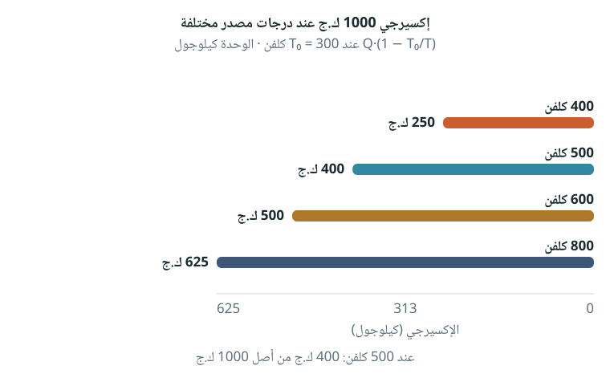

العمل المفقود والإكسيرجي
Lost Work and Exergy
كل حرارة عند درجة أعلى من المحيط تحمل قدرة قصوى على إنتاج شغل؛ عند 500 كلفن و300 كلفن تكون الكفاءة القصوى 40% فينتج 400 ك.ج من 1000 ك.ج. ما يضيع بسبب اللاعكوسية هو «العمل المفقود» = T₀·S_تولّد = 400 ك.ج هنا، لا «طاقة ضاعت» بل قدرة فقدت قابليتها للتحول.
افترض مفاعلًا يشتغل بين مصدر عند 500 كلفن ومحيط عند 300 كلفن. القانون الأول يقول إن الطاقة محفوظة: 1000 ك.ج دخلت فلن تختفي. لكن القانون الثاني يقول إن هذه الطاقة لم تعد قادرة على إنتاج الشغل نفسه: لو أُنتج منها 250 ك.ج فقط بآلة حقيقية، فليس «الفرق 150 ك.ج» قد فُقد من الكون، بل فُقدت قابليته للتحول إلى شغل. هذه القابلية تُسمّى إكسيرجي، والفارق بين أعلى شغل ممكن والشغل المتحقق يُسمّى العمل المفقود. الفرق ليس فلسفة: هو ما يحدّد جدوى مشروع استرجاع حرارة، ويشرح لماذا تكون حرارة عند 180 °م أنفع من كمية الحرارة نفسها عند 60 °م، ولماذا يقيس المهندسون «تدمير الإكسيرجي» في شبكات البخار بدل الاكتفاء بموازنة الطاقة.
كيف تعمل الظاهرة؟
اللاعكوسية — احتكاك، خلط، انتقال حرارة عبر فرق محدود، تفاعل كيميائي سريع — تولّد إنتروبيا. وحاصل ضرب الإنتروبيا المتولدة في درجة حرارة البيئة T₀ يعطي العمل الذي كان يمكن تحصيله لو حدثت العملية عكوسيًّا. ولذلك ينخفض الإكسيرجي في كل خطوة حقيقية، ولا يعود إلا باستهلاك شغل (مضخة حرارية). والمفارقة العملية أن انتقال الحرارة عبر فرق كبير أرخص في رأس المال (مبادل أصغر) وأغلى في الإكسيرجي، فالتصميم الأمثل يوازن بين كلفة السطح وكلفة العمل المفقود.
العلاقة بالأرقام
بين 500 و300 كلفن: η = 1 − 300/500 = 40%، وأعلى شغل من 1000 ك.ج هو 400 ك.ج. وعندما تُطرح الحرارة كلها إلى المحيط تتولد إنتروبيا 1.333 ك.ج/كلفن، فيكون العمل المفقود T₀·S = 300×1.333 = 400 ك.ج. وإكسيرجي الحرارة نفسها هي Q(1 − T₀/T_H) = 400 ك.ج، وهي تساوي أعلى شغل ممكن. وإذا أنتجت الآلة 250 ك.ج فقط كانت كفاءتها 25% من الطاقة الداخلة، أي 62% من الكفاءة القصوى.
مفاهيم متقاربة
الطاقة تُحفظ دائمًا، والإكسيرجي يُستهلك. فالطاقة في ماء فاتر عند 30 °م موجودة، لكن إكسيرجيها قريب من الصفر لأنها قريبة من المحيط. وهذا يفسّر لماذا لا تُعدّ الحرارة المنخفضة «طاقة مجانية» قابلة للتحويل بكفاءة. ويختلف العمل المفقود عن الخسائر الحرارية: الخسارة الحرارية طاقة تخرج إلى المحيط، والعمل المفقود قدرة تُدمَّر داخل النظام نفسه حتى لو لم تتسرب أي حرارة.
حدود التطبيق
T₀ اختيارية وتعتمد على تعريف بيئة مرجعية (هواء، ماء تبريد، أرض)؛ تغييرها يغيّر قيمة الإكسيرجي ولا يغيّر الفيزياء. والنموذج أعلاه لحرارة عند درجة واحدة؛ ولتيار متغير الحرارة يلزم التكامل ∫(1 − T₀/T)dQ، وهذا فرق جوهري في حسابات العوادم والبخار. ولا يُغني حساب الإكسيرجي عن الحساب الاقتصادي: قد يكون تدمير إكسيرجي كبير أرخص من استرجاعه، والقرار حينها هندسي لا حراري فقط.

| الكمية | القيمة | المصدر |
|---|---|---|
| الكفاءة القصوى بين 500 و300 كلفن | 40 % | [1] |
| أعلى شغل ممكن من 1000 ك.ج | 400 ك.ج | [1] |
| الإنتروبيا المتولدة بطرح الحرارة كاملة للمحيط | 1.333 ك.ج/كلفن | [1] |
| العمل المفقود عند T₀ = 300 كلفن | 400 ك.ج | [1] |
| إكسيرجي 1000 ك.ج عند 500 كلفن | 400 ك.ج | [2] |
المصادر
- 1 Carnot's theorem (thermodynamics) — Wikipedia. en.wikipedia.org/wiki/Carnot%27s_theorem_(thermodynamics) · اطُّلع عليه 2026-11-19
- 2 Exergy — Wikipedia. en.wikipedia.org/wiki/Exergy · اطُّلع عليه 2026-11-19
استشهد بهذا المصطلح
الصيغتان مبنيتان من بيانات الصفحة نفسها: العنوان والتاريخ ورابط النسخة المنشورة.
العمل المفقود والإكسيرجي — Lost Work and Exergy. (2026). ديوان المعرفة — انفراد. https://infiradev.com/diwan/terms/exergy-lost-work.html
@misc{exergy-lost-work2026,
title = {العمل المفقود والإكسيرجي},
titleaddon = {Lost Work and Exergy},
howpublished = {{ديوان المعرفة — انفراد} — مرجع علمي عربي},
year = {2026},
url = {https://infiradev.com/diwan/terms/exergy-lost-work.html},
urldate = {2026-11-19},
note = {مراجعة علمية: عبدالله الهويدي — مراجعة في تطبيق انفراد}
}
راجعه: عبدالله الهويدي — مراجعة في تطبيق انفراد · 2026-11-19 · آخر تحديث 2026-11-19